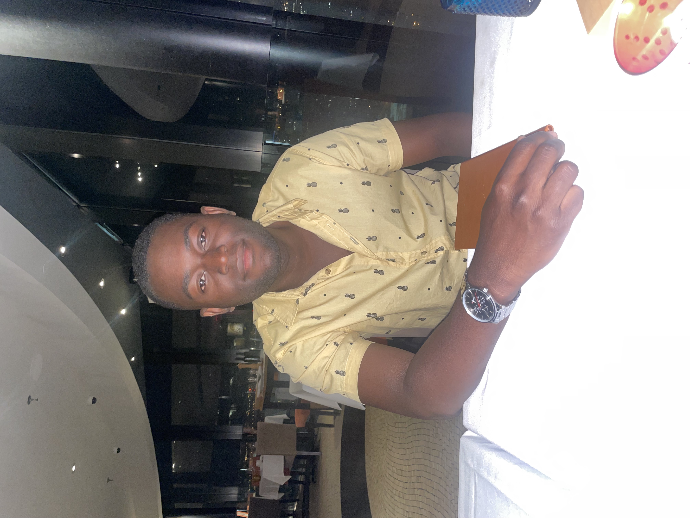

Summary
Technicien en informatique particulièrement expérimente et fiable ayant une bonne expérience et formation technique, je possède les aptitudes nécessaires pour expliquer des concepts et des procédures techniques au client et au personnel peu expérimenté, d’une manière claire et compréhensible. Je suis aussi capable de travailler en équipe.
Education
- Technique du Genie Electronique - La Cite Collegiale (2015-2017)
Work Experience
- Technicien Informatique (2021-Maintenant) - CISSS Lanaudiere
- Reinitialiser le mot de passe des clients
- Analyser les besoins des clients et trouver des solutions
- Traiter les billets
- Stage Soutient informatique Geek Squad (Janvier 2020- Mars 2020)
- Installer des différents systèmes d’exploitation Microsoft Windows et MacOs
- Faire la mise a jours du système d’exploitation et des différents pilotes
- Démonter et Monter des ordinateurs, changer les composantes
Skills
- Connaissance de Word, Excel, PowerPoint ⭐️⭐️⭐️⭐️⭐️
- Service a la clientele ⭐️⭐️⭐️⭐️⭐️
- Web Developement ⭐️⭐️
Awards and Certifications
- Microsoft Azure Administrator
- Certified Network Administrator
- Certified Cloud Architect
Other